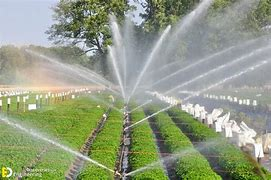
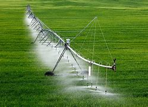

ಪರಿಣಾಮಕಾರಿ ನೀರಾವರಿ ವಿಧಾನಗಳು
1. ಹನಿ ನೀರಾವರಿ:

ವಿವರಣೆ:ಪೈಪ್ಗಳು, ಟ್ಯೂಬ್ಗಳು ಮತ್ತು ಎಮಿಟರ್ಗಳ ಜಾಲದ ಮೂಲಕ ನೀರನ್ನು ನೇರವಾಗಿ ಸಸ್ಯದ ಮೂಲ ವಲಯಕ್ಕೆ ತಲುಪಿಸುತ್ತದೆ.
ಪ್ರಯೋಜನಗಳು:ಹರಿಯುವಿಕೆ ಮತ್ತು ಹರಿವಿನಿಂದಾಗಿ ನೀರಿನ ನಷ್ಟವನ್ನು ಕಡಿಮೆ ಮಾಡುತ್ತದೆ, ಕಳೆ ಬೆಳವಣಿಗೆಯನ್ನು ಕಡಿಮೆ ಮಾಡುತ್ತದೆ ಮತ್ತು ನಿಖರವಾದ ನೀರು ಮತ್ತು ಪೋಷಕಾಂಶಗಳ ವಿತರಣೆಯನ್ನು ಅನುಮತಿಸುತ್ತದೆ.
ಉತ್ತಮ ಉದ್ದೇಶ:ಹೆಚ್ಚಿನ ಮೌಲ್ಯದ ಬೆಳೆಗಳು, ತೋಟಗಾರಿಕೆ, ತೋಟಗಳು ಮತ್ತು ಒಳಾಂಗಣ.
2. ತುಂತುರು ನೀರಾವರಿ:
ವಿವರಣೆ:ನೈಸರ್ಗಿಕ ಮಳೆಯನ್ನು ಅನುಕರಿಸುವ ಪೈಪ್ಗಳು ಮತ್ತು ಸ್ಪ್ರಿಂಕ್ಲರ್ಗಳ ವ್ಯವಸ್ಥೆಯ ಮೂಲಕ ನೀರನ್ನು ವಿತರಿಸುತ್ತದೆ.
ಅನುಕೂಲಗಳು:ವಿವಿಧ ಬೆಳೆಗಳು ಮತ್ತು ಸಂಕೀರ್ಣಗಳಿಗೆ ಸೂಕ್ತವಾಗಿದೆ, ದೊಡ್ಡ ಪ್ರದೇಶಗಳನ್ನು ಒಳಗೊಳ್ಳಬಹುದು ಮತ್ತು ನಿರ್ಮಿಸಲು, ಸ್ಥಾಪಿಸಲು ಮತ್ತು ನಿರ್ವಹಿಸಲು ಸರಳವಾಗಿದೆ.
ಅತ್ಯುತ್ತಮ: ಕೃಷಿ, ಹುಲ್ಲುಹಾಸುಗಳು ಮತ್ತು ಭೂದೃಶ್ಯಗಳು.
3. ಕೇಂದ್ರ ಪಿವೋಟ್ ನೀರಾವರಿ:
ವಿವರಣೆ:ಒಂದು ರೀತಿಯ ಸ್ಪ್ರಿಂಕ್ಲರ್ ಸಿಸ್ಟಮ್ ಕೇಂದ್ರ ಪಿವೋಟ್ ಪಾಯಿಂಟ್ನ ಸುತ್ತಲೂ ತಿರುಗುತ್ತದೆ, ಇದು ವೃತ್ತಾಕಾರದ ನೀರಾವರಿ ಮಾದರಿಯನ್ನು ರಚಿಸುತ್ತದೆ.
ಅನುಕೂಲಗಳು:ದಕ್ಷಿಣ ಬಳಕೆ, ಕಾರ್ಮಿಕರ ಅಗತ್ಯವನ್ನು ಕಡಿಮೆ ಮಾಡುತ್ತದೆ ಮತ್ತು ನೀರಿನ ಬಳಕೆಯನ್ನು ನಿಯಂತ್ರಿಸುತ್ತದೆ.
ಇದಕ್ಕಾಗಿ ಉತ್ತಮ ಉದ್ದೇಶ:ದೊಡ್ಡ ಪ್ರಮಾಣದ ಕೃಷಿ ಎಂಜಿನಿಯರಿಂಗ್, ವಿಶೇಷವಾಗಿ ಸಮತಟ್ಟಾದ ಅಥವಾ ಸ್ವಲ್ಪ ಸಮತಟ್ಟಾದ ಪ್ರದೇಶಗಳಲ್ಲಿ.
4. ಮೇಲ್ಮೈ ನೀರಾವರಿ:

ವಿವರಣೆ:ಮಣ್ಣಿನ ಮೇಲ್ಮೈಗೆ ನೇರವಾಗಿ ನೀರನ್ನು ಅನ್ವಯಿಸುವ ಮತ್ತು ಹರಿವು ಮತ್ತು ಗುರುತ್ವಾಕರ್ಷಣೆಯ ಮೂಲಕ ಅದನ್ನು ವಿತರಿಸುವ ಕ್ರಿಯೆ.
ವಿಧಗಳು:ಉಬ್ಬು, ಜಲಾನಯನ ಮತ್ತು ಗಡಿ ನೀರಾವರಿ.
ಅನುಕೂಲಗಳು:ಕಡಿಮೆ ಆರಂಭಿಕ ಹೂಡಿಕೆ ಮತ್ತು ಶಕ್ತಿಯ ವೆಚ್ಚಗಳು, ಕಾರ್ಯನಿರ್ವಹಿಸಲು ಸರಳವಾಗಿದೆ.
ಇದಕ್ಕೆ ಉತ್ತಮ: ಸಾಲು ಬೆಳೆಗಳು, ಹುಲ್ಲುಗಾವಲುಗಳು ಮತ್ತು ಸೂಕ್ತವಾದ ಮಣ್ಣಿನ ಪ್ರಕಾರಗಳು ಮತ್ತು ಎತ್ತರದ ತೋಟಗಳು.
5. ಉಪಮೇಲ್ಮೈ ನೀರಾವರಿ:

ವಿವರಣೆ: ಸಮಾಧಿ ಮಾಡಿದ ಡ್ರಿಪ್ ಲೈನ್ಗಳು ಅಥವಾ ಮೇಲ್ಮೈ ಕೆಳಗೆ ಅಂಚಿನ ಪೈಪ್ಗಳ ಮೂಲಕ ನೀರನ್ನು ನೇರವಾಗಿ ಮೂಲ ವಲಯಕ್ಕೆ ತಲುಪಿಸುತ್ತದೆ.
ಪ್ರಯೋಜನಗಳು:ಆವಿಯಾಗುವಿಕೆ ಮತ್ತು ಮೇಲ್ಮೈ ಪ್ರದೇಶಗಳಿಂದ ನೀರಿನ ನಷ್ಟವನ್ನು ಕಡಿಮೆ ಮಾಡುತ್ತದೆ, ಆಹಾರ ಮತ್ತು ನೀರಿನ ನಿಖರವಾದ ವಿತರಣೆಯನ್ನು ಅನುಮತಿಸುತ್ತದೆ.
ಇದಕ್ಕೆ ಅತ್ಯುತ್ತಮವಾದದ್ದು:ಹೆಚ್ಚಿನ ಮೌಲ್ಯದ ಬೆಳೆಗಳು, ಹುಲ್ಲುಗಳು ಮತ್ತು ಸಸ್ಯವರ್ಗವನ್ನು ಹೊಂದಿರುವ ಭೂದೃಶ್ಯಗಳಲ್ಲಿ, ನಿರ್ಬಂಧಿತ ನೀರಿನ ಲಭ್ಯತೆಯಿರುವ ಪ್ರದೇಶಗಳಲ್ಲಿ.
6. ಸ್ವಯಂಚಾಲಿತ ನೀರಾವರಿ ವ್ಯವಸ್ಥೆ:
ವಿವರಣೆ:ಮಣ್ಣಿನ ತೇವಾಂಶ, ಹವಾಮಾನ ಪರಿಸ್ಥಿತಿಗಳು ಮತ್ತು ಬೆಳೆ ಅವಶ್ಯಕತೆಗಳ ಆಧಾರದ ಮೇಲೆ ನೀರಾವರಿ ವೇಳಾಪಟ್ಟಿಯನ್ನು ಸ್ವಯಂಚಾಲಿತಗೊಳಿಸಲು ಮತ್ತು ಪರಿಪೂರ್ಣಗೊಳಿಸಲು ಸಂವೇದಕಗಳು, ಟೈಮರ್ಗಳು ಮತ್ತು ಕಂಪ್ಯೂಟರ್ ನಿಯಂತ್ರಣಗಳನ್ನು ಬಳಸುತ್ತದೆ.
ಪ್ರಯೋಜನಗಳು:ಸಮಯವನ್ನು ಉಳಿಸುತ್ತದೆ, ನೀರಿನ ವ್ಯರ್ಥವನ್ನು ಕಡಿಮೆ ಮಾಡುತ್ತದೆ ಮತ್ತು ಸಸ್ಯಗಳು ಸರಿಯಾದ ಪ್ರಮಾಣದ ನೀರನ್ನು ಪಡೆಯುವುದನ್ನು ಖಚಿತಪಡಿಸುತ್ತದೆ.
ಇದಕ್ಕೆ ಅತ್ಯುತ್ತಮವಾದದ್ದು:ಉದ್ಯಾನಗಳು, ಭೂದೃಶ್ಯಗಳು, ಹಸಿರುಮನೆಗಳು ಮತ್ತು ನಿರ್ದೇಶನದ ಕೃಷಿಯಲ್ಲಿ.
ನೀರಾವರಿ ವಿಧಾನವನ್ನು ಆಯ್ಕೆಮಾಡುವಾಗ ಗಮನ ಕೊಡಬೇಕಾದ ಅಂಶಗಳು:
- ಮಣ್ಣಿನ ಪ್ರಕಾರ: ಮರಳು ಮಣ್ಣುಗಳು ನೀರನ್ನು ತ್ವರಿತವಾಗಿ ಹರಿಸುತ್ತವೆ ಮತ್ತು ಹೆಚ್ಚು ಆಗಾಗ್ಗೆ, ಸಣ್ಣ ಪ್ರಮಾಣದ ನೀರಿನ ಅಗತ್ಯವಿರುತ್ತದೆ, ಆದರೆ ಮಣ್ಣಿನ ಮಣ್ಣುಗಳು ನೀರನ್ನು ಹೆಚ್ಚು ಮತ್ತು ಹೆಚ್ಚು ಆಳವಾಗಿ ಹಿಡಿದಿಟ್ಟುಕೊಳ್ಳುತ್ತವೆ.
- ಬೆಳೆಯ ಪ್ರಕಾರ:ವಿವಿಧ ಬೆಳೆಗಳು ವಿಭಿನ್ನ ನೀರಿನ ಅವಶ್ಯಕತೆಗಳನ್ನು ಹೊಂದಿವೆ ಮತ್ತು ನೀರಿನ ಒತ್ತಡವನ್ನು ಸಹಿಸಿಕೊಳ್ಳುತ್ತವೆ.
- ಹವಾಮಾನ:ಸ್ಥಳೀಯ ಹವಾಮಾನ ಮಾದರಿಗಳು, ಹವಾಮಾನಶಾಸ್ತ್ರ ಮತ್ತು ತಾಪಮಾನವು ನೀರಾವರಿ ಅಗತ್ಯತೆಗಳು ಮತ್ತು ವಿಧಾನಗಳ ಮೇಲೆ ಪ್ರಭಾವ ಬೀರುತ್ತದೆ.
- ನೀರಿನ ಲಭ್ಯತೆ:ಲಭ್ಯವಿರುವ ನೀರಿನ ಪ್ರಮಾಣ ಮತ್ತು ಗುಣಮಟ್ಟವು ಹೆಚ್ಚು ಸೂಕ್ತವಾದ ನೀರಾವರಿ ವಿಧಾನವನ್ನು ನಿರ್ಧರಿಸಬಹುದು.
- ಲ್ಯಾಂಡ್ಫಾರ್ಮ್: ಭೂಮಿಯ ಇಳಿಜಾರು ಮತ್ತು ವಿನ್ಯಾಸವು ನೀರಿನ ವಿತರಣೆ ಮತ್ತು ನೀರಿನ ಹರಿವಿನ ಮೇಲೆ ಪರಿಣಾಮ ಬೀರುತ್ತದೆ.
ಈ ಅಂಶಗಳ ಆಧಾರದ ಮೇಲೆ ಸೂಕ್ತವಾದ ನೀರಾವರಿ ವಿಧಾನವನ್ನು ಆಯ್ಕೆ ಮಾಡುವ ಮೂಲಕ, ರೈತರು ಮತ್ತು ತೋಟಗಾರರು ಸಮರ್ಥ ನೀರಿನ ಬಳಕೆಗೆ ಕೊಡುಗೆ ನೀಡಬಹುದು, ಬೆಳೆ ಕಾರ್ಯಕ್ಷಮತೆಯನ್ನು ಹೆಚ್ಚಿಸಬಹುದು ಮತ್ತು ನಿರ್ದಿಷ್ಟವಾದ ನೀರಿನ ನಿರ್ವಹಣೆ ಪದ್ಧತಿಗಳನ್ನು ಅಳವಡಿಸಿಕೊಳ್ಳಬಹುದು.